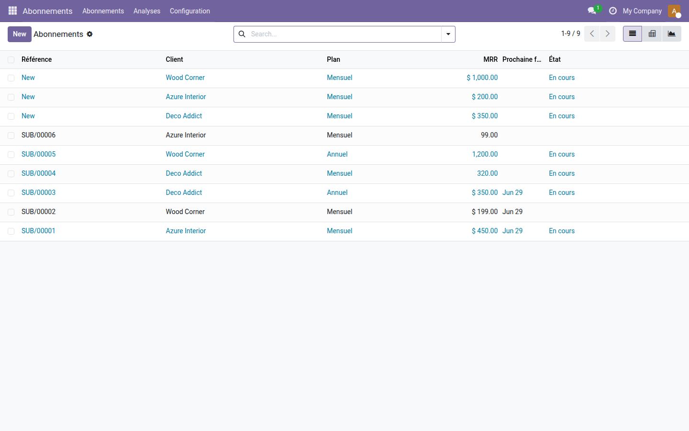
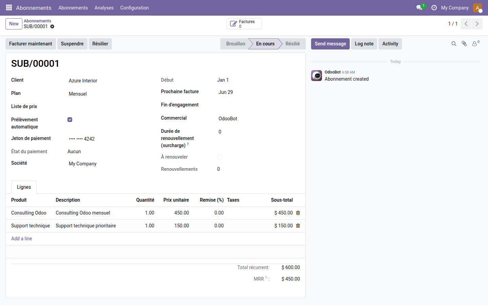
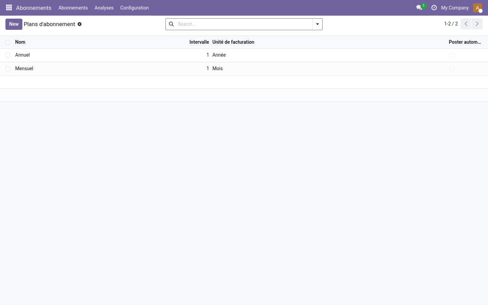

Subscriptions — Oski
Automatic recurring invoicing for Odoo 19 Community — no Enterprise module needed.
Odoo Community has no native subscription management: every month you have to create invoices by hand, remember which customers to follow up, and work out on a calculator how much recurring revenue is really coming in. For software publishers, service providers or any business with monthly plans, this friction costs time — and oversights that cost money.
What it brings
- 📅 Configurable billing plans — create as many plans as you need (monthly, quarterly, yearly, or any other day/week/month/year rhythm) and reuse them across all your subscribers.
- ⚡ Automatic invoicing by scheduled action — a scheduled action generates (and, if enabled, confirms) the invoices on the due date for every active subscription that has reached it, with no human intervention.
- 📊 Automatically computed MRR — Monthly Recurring Revenue is normalized whatever the billing period (daily, yearly…) and shown in list, pivot and graph views.
- 🔁 Full lifecycle — start, suspend, resume or cancel a subscription in one click; start, next invoice and commitment end dates are tracked automatically.
- ✅ Linked invoice history — every generated invoice is reachable directly from the subscription form, with a counter shown at the top of the page.
- 🔒 “To invoice” filter — spot in one click the active subscriptions whose invoicing date has passed, to run a grouped manual invoicing if needed.
In pictures
Overview: the full list of subscriptions with normalized MRR, billing plan and status (In progress / Cancelled) at a glance.

Subscription form: full lifecycle (Invoice, Suspend, Cancel), several service lines, recurring total and automatically computed MRR.

Configurable subscription plans: set the billing interval and unit (Day, Week, Month, Year) for each plan, reusable across all your subscribers.

Why adopt it
- Open source (LGPL-3) — zero license cost, no external dependency, deployable on your Community instance without restriction.
- A feature usually reserved for Enterprise — recurring subscription management is native in Odoo Enterprise; this module brings it natively to Community with no extra subscription cost.
- Extensible with Pro add-ons — add the MRR dashboard, recurring online payment, the subscriber portal or renewal workflows as you need them (see the suite below).
- Native Odoo integration — built on the standard models (res.partner, account.move, product.product) and the chatter for traceability; no dependency outside Odoo.
Part of the Subscription Pro suite
This module is the open-source core of the suite. Extend it with:
- oski_subscription_dashboard — real-time MRR, churn and ARR dashboard.
- oski_subscription_payment — automatic recurring payment (card, SEPA transfer…).
- oski_subscription_portal — subscriber area on the website to view and manage the subscription.
- oski_subscription_renewal — renewal workflow and automatic reminders before the due date.
See the full suite on apps.odooskills.com.
LGPL-3 license — compatible with Odoo 19.0. Support : apps@odooskills.com.